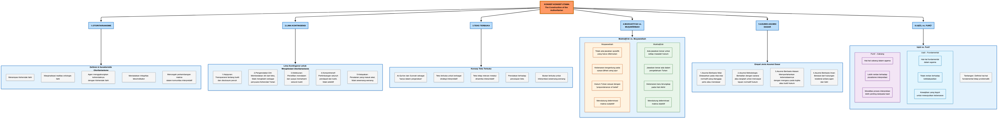

PEMAHAMAN STRUKTURAL BAB "THE CONSTRUCTION OF THE AUTHORITARIAN"
A. Pola Pengorganisasian Utama dalam "The Construction of the Authoritarian"
Teks "The Construction of the Authoritarian" menggunakan pola pengorganisasian argumentatif-konseptual sebagai pola utama, yang didukung oleh struktur tematik dan diskursif yang kompleks. Teks ini merupakan bab kelima dari sebuah karya yang lebih besar yang membahas konsep otoritarianisme dalam interpretasi teks keagamaan, khususnya dalam konteks Islam.
1. Struktur Argumentatif-Konseptual
Penulis membangun argumennya secara progresif dengan:
- Mendefinisikan konsep inti (otoritarianisme)
- Mengembangkan kerangka teoretis
- Menyajikan prinsip-prinsip dan klaim-klaim
- Memberikan contoh dan ilustrasi untuk memperkuat argumennya
Pola argumentasi utama dalam teks ini bersifat deduktif-induktif, dimana penulis:
- Dimulai dengan pernyataan konseptual tentang otoritarianisme
- Mengembangkan argumen teoretis
- Memberikan contoh konkret
- Kembali ke prinsip-prinsip umum
2. Struktur Tematik
Teks ini diorganisasikan ke dalam beberapa bagian/subtema utama yang ditandai dengan subjudul:
- Pendahuluan tentang otoritarianisme (halaman 293-294)
- The iron law of authoritarianism (halaman 295-299)
- Islamic law as a work in movement (halaman 300-304)
- The fundamentals of religion and burdens of proof (halaman 309-328)
- Moral objections and authoritarianism (halaman 329-335)
Setiap bagian membahas aspek berbeda dari konstruksi otoritarianisme dalam konteks interpretasi hukum Islam.
3. Struktur Diskursif
Penulis menggunakan pola diskursif yang melibatkan:
a. Pengenalan Pandangan Beragam
"Some scholars have tended to equate speculative or unreasonable interpretations of the text and epistemological authoritarianism, while some have branded the attempt to limit the instabilities of textual meaning or the dependence on authorial intent as the source of meaning, as authoritarian." (hal. 293)
"Beberapa sarjana cenderung menyamakan interpretasi spekulatif atau tidak masuk akal terhadap teks dan otoritarianisme epistemologis, sementara beberapa telah mencap upaya untuk membatasi ketidakstabilan makna tekstual atau ketergantungan pada maksud pengarang sebagai sumber makna, sebagai otoriter."
b. Formulasi Posisi Pribadi
"In the Islamic context, I believe that authoritarianism is an act of ultimate lack of self-restraint that involves a fraudulent claim whose natural effect is to usurp the Divine Will." (hal. 293)
"Dalam konteks Islam, saya percaya bahwa otoritarianisme adalah suatu tindakan kekurangan pengendalian diri yang paling parah yang melibatkan klaim penipuan yang efek alaminya adalah merampas Kehendak Ilahi."
c. Pengajuan Argumen Teoretis
"Authoritarianism, then, is the marginalization of the ontological reality of the Divine and the depositing of this Divine Will in the agent so that the agent effectively becomes self-referential." (hal. 293)
"Otoritarianisme, kemudian, adalah marginalisasi realitas ontologis Ilahi dan penyimpanan Kehendak Ilahi ini dalam agen sehingga agen secara efektif menjadi self-referential (merujuk pada diri sendiri)."
d. Eksplorasi Implikasi
"The risk is that the text and the construction of the reader will become one and the same. In this process, the text is rendered subservient to the reader and, effectively, the reader is substituted for the text." (hal. 295)
"Risikonya adalah bahwa teks dan konstruksi pembaca akan menjadi satu dan sama. Dalam proses ini, teks dibuat tunduk pada pembaca dan, secara efektif, pembaca digantikan untuk teks."
e. Kasus Konkret dan Ilustrasi
Penulis menggunakan contoh-contoh kasus seperti:
- Persoalan jilbab/hijab dalam hukum Islam (hal. 296-299)
- Contoh pernikahan antara wanita Hanafi dan ayah Syafi'i (hal. 329-331)
- Contoh apostasi dalam Islam (hal. 332-335)
4. Aspek Dialektis
Teks ini juga menunjukkan pola dialektis yang kuat, di mana penulis:
- Menyajikan argumen
- Mengantisipasi sanggahan
- Memberikan tanggapan terhadap sanggahan tersebut
Contoh:
"Let us assume that I have positioned myself as a person knowledgeable in Islamic law [...] One of those agents asks me whether in Islamic law, a woman has the power to divorce her husband. I respond by saying, according to Islamic law a woman always has the power to divorce her husband for cause or no cause. This response is misleading and dishonest because by asking about Islamic law, and not simply my personal opinion, the agent is implicitly asking about the determination of the system that produced Islamic law." (hal. 297-298)
"Mari kita asumsikan bahwa saya telah memposisikan diri sebagai orang yang berpengetahuan dalam hukum Islam [...] Salah satu dari agen-agen tersebut bertanya kepada saya apakah dalam hukum Islam, seorang wanita memiliki kekuasaan untuk menceraikan suaminya. Saya menjawab dengan mengatakan, menurut hukum Islam seorang wanita selalu memiliki kekuasaan untuk menceraikan suaminya dengan alasan atau tanpa alasan. Respons ini menyesatkan dan tidak jujur karena dengan bertanya tentang hukum Islam, dan bukan hanya pendapat pribadi saya, agen tersebut secara implisit bertanya tentang penentuan sistem yang menghasilkan hukum Islam."
Kesimpulan
Pola pengorganisasian utama dalam teks "The Construction of the Authoritarian" adalah argumentatif-konseptual, didukung oleh struktur tematik yang jelas dan pola diskursif yang kompleks. Penulis membangun argumennya secara bertahap, mulai dari definisi konseptual hingga implikasi praktis, menggunakan campuran penalaran deduktif dan induktif. Struktur ini memungkinkan penulis untuk mengembangkan kerangka teoretis yang kompleks tentang otoritarianisme dalam interpretasi teks keagamaan Islam sambil menjaga koherensi argumentasi dan memperjelas posisinya dalam perdebatan akademis yang lebih luas.
B. KONSEP-KONSEP KUNCI DALAM "The Construction of the Authoritarian"
Teks "The Construction of the Authoritarian" mengetengahkan beberapa konsep kunci yang saling terhubung membentuk kerangka teoretis tentang otoritarianisme dalam interpretasi teks keagamaan Islam. Berikut adalah pemetaan konsep-konsep utama tersebut dan bagaimana konsep-konsep tersebut saling berhubungan.
1. Otoritarianisme
Konsep sentral dalam teks ini adalah otoritarianisme dalam konteks interpretasi teks keagamaan. Penulis mendefinisikannya sebagai:
"In the Islamic context, I believe that authoritarianism is an act of ultimate lack of self-restraint that involves a fraudulent claim whose natural effect is to usurp the Divine Will. Authoritarianism, then, is the marginalization of the ontological reality of the Divine and the depositing of this Divine Will in the agent so that the agent effectively becomes self-referential." (hal. 293)
"Dalam konteks Islam, saya percaya bahwa otoritarianisme adalah suatu tindakan kekurangan pengendalian diri yang paling parah yang melibatkan klaim penipuan yang efek alaminya adalah merampas Kehendak Ilahi. Otoritarianisme, kemudian, adalah marginalisasi realitas ontologis Ilahi dan penyimpanan Kehendak Ilahi ini dalam agen sehingga agen secara efektif menjadi self-referential (merujuk pada diri sendiri)."
Konsep otoritarianisme ini berhubungan langsung dengan konsep:
- Kehendak Ilahi (Divine Will)
- Agen (interpreter/reader)
- Teks (sebagai representasi instruksi dari Kehendak Ilahi)
2. Lima Kontingensi (Five Contingencies)
Penulis menyebutkan lima kontingensi sebagai syarat untuk menghindari otoritarianisme:
"The authoritarian tendency is resisted through the implementation of the five contingencies discussed earlier – honesty, self-restraint, diligence, comprehensiveness, and reasonableness. In fact, authoritarianism invariably involves the violation of one or more of the five contingencies." (hal. 295-296)
"Kecenderungan otoriter dilawan melalui penerapan lima kontingensi yang dibahas sebelumnya – kejujuran, pengendalian diri, ketekunan, komprehensif, dan kelayakan. Sebenarnya, otoritarianisme selalu melibatkan pelanggaran terhadap satu atau lebih dari lima kontingensi tersebut."
Lima kontingensi ini adalah:
- Kejujuran (honesty)
- Pengendalian diri (self-restraint)
- Ketekunan (diligence)
- Komprehensif (comprehensiveness)
- Kelayakan/masuk akal (reasonableness)
3. Teks Terbuka (Open Text)
Konsep teks terbuka (open text) adalah kunci dalam pemahaman penulis tentang bagaimana menghindari otoritarianisme:
"The Qur'ān and Sunnah, to borrow Umberto Eco's expression, are 'works in movement' – they are works that leave themselves open to multiple interpretive strategies. This does not mean that they are open to any interpretation, but that they are capable of supporting a dynamic interpretive movement." (hal. 301)
"Al-Qur'an dan Sunnah, meminjam ungkapan Umberto Eco, adalah 'karya dalam pergerakan' – karya-karya yang membuka diri untuk berbagai strategi interpretatif. Ini tidak berarti bahwa mereka terbuka untuk interpretasi apa pun, tetapi bahwa mereka mampu mendukung gerakan interpretatif yang dinamis."
Penulis menjelaskan bahwa menutup teks (closing the text) adalah tindakan otoritarian:
"The closing of the text takes place when the reader insists that the text has a determined, stable, constant and unchangeable meaning. A source becomes a closed text when a reader is able to shut down the interpretive process and is able to merge the text with a particular determination." (hal. 302)
"Penutupan teks terjadi ketika pembaca bersikeras bahwa teks memiliki makna yang ditentukan, stabil, konstan, dan tidak dapat diubah. Sebuah sumber menjadi teks tertutup ketika pembaca mampu mematikan proses interpretatif dan mampu menggabungkan teks dengan determinasi tertentu."
4. Mukhaṭṭi'ah dan Muṣawwibah
Penulis menjelaskan dua aliran pemikiran utama dalam yurisprudensi Islam mengenai kebenaran interpretasi:
a. Mukhaṭṭi'ah:
"The first school, known as the mukhaṭṭi'ah, argued that ultimately, there is a correct answer to every textual or legal problem. However, only God knows what the correct response is and the truth will not be revealed until the Final Day." (hal. 305)
"Mazhab pertama, yang dikenal sebagai mukhaṭṭi'ah, berpendapat bahwa pada akhirnya, ada jawaban yang benar untuk setiap masalah tekstual atau hukum. Namun, hanya Tuhan yang tahu apa jawaban yang benar dan kebenaran tidak akan terungkap sampai Hari Akhir."
b. Muṣawwibah:
"The second school, known as the muṣawwibah, included prominent jurists such as al-Juwaynī, al-Suyūṭī, al-Ghazālī and al-Rāzī... The muṣawwibah argued that there is no specific and correct answer (ḥukm mu'ayyati) that God wants human beings to discover, in part, because if there were a correct answer, God would have made the textual evidence conclusive and clear." (hal. 306)
"Mazhab kedua, yang dikenal sebagai muṣawwibah, termasuk ahli hukum terkemuka seperti al-Juwaynī, al-Suyūṭī, al-Ghazālī dan al-Rāzī... Muṣawwibah berpendapat bahwa tidak ada jawaban khusus dan benar (ḥukm mu'ayyati) yang Tuhan inginkan manusia untuk menemukan, sebagian, karena jika ada jawaban yang benar, Tuhan akan membuat bukti tekstual yang konklusif dan jelas."
Pengertian "Determinasi Makna"
Dalam konteks pembahasan di teks "The Construction of the Authoritarian", konsep determinasi makna (determination of meaning) adalah konsep yang sangat sentral dan kompleks.
1. Definisi Dasar
Determinasi makna merujuk pada proses menetapkan atau menentukan arti dari sebuah teks, khususnya teks keagamaan seperti Al-Qur'an dan Sunnah. Ini berkaitan dengan pertanyaan fundamental: bagaimana kita mengetahui apa arti sebenarnya dari sebuah teks? Apakah makna tersebut tetap, dapat diketahui dengan pasti, atau bersifat fleksibel dan bergantung pada interpretasi?
Dalam teks ini, penulis mengeksplorasi berbagai dimensi dari determinasi makna dalam konteks hukum Islam dan bagaimana proses ini dapat menjadi otoritarian.
2. Komponen-Komponen Determinasi Makna
Berdasarkan teks, determinasi makna memiliki beberapa komponen penting:
Hubungan Tiga Pihak: Determinasi makna melibatkan hubungan antara tiga entitas - pembaca (reader/agent), teks (text), dan penulis atau dalam konteks teks keagamaan adalah Tuhan (Author/Principal).
"In short, the checks and balances of the interpretive process, which requires three distinct participants – the reader, the text, and the author (or authorial enterprise) – has been diluted into a unified dictatorship." (hal. 332)
Proses Interaktif: Determinasi makna adalah proses interaktif di mana pembaca "bernegosiasi" dengan teks untuk memahami maksud penulisnya.
"But the determination of meaning will depend on an interactive and negotiative process between the reader, text and the Author." (hal. 333)
Kontingensi: Proses determinasi makna tunduk pada lima kontingensi yang disebutkan penulis - kejujuran, pengendalian diri, ketekunan, komprehensif, dan kelayakan/masuk akal.
3. Dua Pandangan Utama Tentang Determinasi Makna
Dalam konteks yurisprudensi Islam, teks mengidentifikasi dua pandangan utama tentang determinasi makna yang diwakili oleh dua mazhab pemikiran:
a. Pandangan Mukhaṭṭi'ah: Determinasi Makna Objektif
Mazhab Mukhaṭṭi'ah berpegang pada pandangan bahwa:
- Setiap pertanyaan hukum atau tekstual memiliki satu jawaban benar yang telah ditentukan oleh Tuhan
- Makna ini bersifat objektif dan pasti, terlepas dari apakah manusia dapat menemukannya atau tidak
- Makna "benar" telah ditentukan dan disimpan dalam "repositori Pengetahuan Ilahi"
- Manusia hanya bisa berusaha mendekati kebenaran ini, tapi tidak pernah bisa yakin 100% telah mencapainya di dunia ini
Pandangan ini mewakili determinasi makna yang lebih "tetap" dan independen dari interpreter.
"The first school, known as the mukhaṭṭi'ah, argued that ultimately, there is a correct answer to every textual or legal problem. However, only God knows what the correct response is and the truth will not be revealed until the Final Day. In this sense, on every legal issue and in every textual encounter, God has predetermined a correct answer that exists in the repository of Divine Knowledge." (hal. 305)
b. Pandangan Muṣawwibah: Determinasi Makna Subjektif
Mazhab Muṣawwibah memiliki pandangan yang berbeda:
- Tidak ada jawaban yang telah ditentukan sebelumnya yang Tuhan ingin manusia temukan
- Makna bergantung pada interpretasi manusia setelah ijtihad (upaya penalaran) yang jujur dan tekun
- Kebenaran hukum bergantung pada keyakinan dan bukti yang tersedia
- Hukum Tuhan untuk setiap individu adalah sesuai dengan "preponderance of belief" (keyakinan terkuat) mereka setelah upaya ijtihad yang jujur
Pandangan ini mewakili determinasi makna yang lebih "fleksibel" dan terkait dengan proses interpretasi.
"Al-Juwaynī explains this point by asserting, 'The most a mujtahid would claim is a preponderance of belief (ghalabat al-ẓann) and the balancing of the evidence. However, certainty was never claimed by any of [the early jurists]... He explains that it is as if God has said: 'My command to My servants is in accordance with the preponderance of their beliefs. So whoever preponderantly believes that they are obligated to do something, acting upon it becomes My command.'" (hal. 306-307)
4. Masalah Determinasi Makna dalam Konteks Otoritarianisme
Penulis mengidentifikasi beberapa masalah kritis terkait determinasi makna yang dapat mengarah pada otoritarianisme:
a. Klaim Determinasi Final
Otoritarianisme terjadi ketika seseorang mengklaim telah mencapai determinasi makna final yang tidak dapat diubah:
"The risk is that the text and the construction of the reader will become one and the same. In this process, the text is rendered subservient to the reader and, effectively, the reader is substituted for the text." (hal. 295)
b. Menutup Teks
Salah satu bentuk otoritarianisme adalah "menutup teks" dengan mengklaim bahwa teks memiliki makna yang tetap dan tidak berubah:
"The closing of the text takes place when the reader insists that the text has a determined, stable, constant and unchangeable meaning. A source becomes a closed text when a reader is able to shut down the interpretive process and is able to merge the text with a particular determination." (hal. 302)
c. Mengklaim Identitas dengan Kehendak Tuhan
Otoritarianisme terjadi ketika interpreter mengklaim bahwa interpretasinya identik dengan kehendak Tuhan:
"If the reader overcomes and usurps the text, the danger is that the reader stands suspended, untouchable, transcendent, and authoritarian." (hal. 295)
5. Alternatif Determinasi Makna yang Tidak Otoritarian
Penulis menyarankan pendekatan determinasi makna yang tidak otoritarian:
Pengakuan Keterbatasan: Mengakui bahwa determinasi makna oleh manusia selalu bersifat tentatif dan tidak pernah dapat menjadi final.
Teks Terbuka: Memperlakukan teks sebagai "karya dalam pergerakan" yang terbuka untuk berbagai strategi interpretatif:
"The Qur'ān and Sunnah, to borrow Umberto Eco's expression, are 'works in movement' – they are works that leave themselves open to multiple interpretive strategies." (hal. 301)
Kejujuran Intelektual: Menjaga kejujuran intelektual dengan mengakui pluralitas interpretasi dan bukti yang bertentangan:
"Wakī' is reported to have said: 'The people of knowledge (the scholars) document all the evidence [on a matter], whether pro or con. The people of whim, however, document only the evidence that supports their position [and ignore the rest].'" (hal. 335)
Transparansi Asumsi: Selalu transparan tentang asumsi-asumsi dasar yang mendasari determinasi makna tertentu.
6. Implikasi Filosofis Determinasi Makna
Pertanyaan tentang determinasi makna memiliki implikasi filosofis yang dalam:
Epistemologis: Bagaimana kita bisa mengetahui makna sebenarnya dari teks keagamaan? Apakah manusia dapat mengakses "Kehendak Ilahi"?
Ontologis: Apakah makna "benar" dari teks ada secara independen dari interpretasi manusia?
Teologis: Bagaimana hubungan antara pengetahuan manusia dan pengetahuan Tuhan? Penulis mengutip ayat Al-Qur'an:
"The Qur'ān states: 'The Word of your Lord has been completed in truth and justice. None can replace your Lord's Words for your Lord is the All-Hearing and All-Knowing.'" (hal. 303)
Determinasi makna dalam konteks ini adalah konsep multidimensi yang berkaitan dengan bagaimana kita menetapkan arti dari teks keagamaan dan siapa yang memiliki otoritas untuk melakukannya. Penulis berpendapat bahwa pengakuan terhadap kompleksitas proses ini, pluralitas interpretasi, dan keterbatasan manusia dalam memahami Kehendak Ilahi adalah kunci untuk menghindari otoritarianisme dalam interpretasi keagamaan.
Pandangan penulis cenderung lebih mendukung pendekatan muṣawwibah yang mengakui bahwa determinasi makna adalah proses yang subjektif, meskipun terikat oleh syarat-syarat kejujuran intelektual dan ketekunan. Pendekatan ini menghindari klaim-klaim absolut tentang makna teks dan mengakui pluralisme interpretasi sebagai aspek tak terhindarkan dari upaya manusia memahami pesan Ilahi.
5. Asumsi-Asumsi Dasar (Basic Assumptions) dalam komunitas interpretatif hukum Islam
Penulis mengidentifikasi empat jenis asumsi dasar dalam komunitas interpretatif Islam:
"As far as the basic assumptions of the juristic communities are concerned, one can differentiate between four types. This is not an exhaustive survey of all the pertinent assumptions, but I have sought to take account of the major unspoken assumptions in the Islamic juristic culture." (hal. 316)
"Sejauh menyangkut asumsi dasar komunitas yuristik, seseorang dapat membedakan antara empat jenis. Ini bukan survei menyeluruh dari semua asumsi yang relevan, tetapi saya telah berusaha untuk memperhitungkan asumsi-asumsi besar yang tidak terucapkan dalam budaya yuristik Islam."
Keempat jenis asumsi tersebut adalah:
a. Asumsi Berbasis Nilai (Value-based assumptions)
"Value-based assumptions are founded on normative values that the legal system considers necessary or basic. They are the fundamental values of a juristic culture, or what a particular juristic community considers normatively desirable." (hal. 317)
"Asumsi berbasis nilai didasarkan pada nilai-nilai normatif yang dianggap perlu atau mendasar oleh sistem hukum. Ini adalah nilai-nilai fundamental dari budaya yuristik, atau apa yang dianggap secara normatif diinginkan oleh komunitas yuristik tertentu."
b. Asumsi Metodologis (Methodological assumptions)
"Methodological assumptions differ from value-based assumptions in certain respects, and in other respects they tend to overlap with value assumptions of the legal system. Methodological assumptions relate to the means or requisite steps for achieving the normative goals of the law." (hal. 318)
"Asumsi metodologis berbeda dari asumsi berbasis nilai dalam aspek tertentu, dan dalam aspek lain mereka cenderung tumpang tindih dengan asumsi nilai dari sistem hukum. Asumsi metodologis berkaitan dengan sarana atau langkah yang diperlukan untuk mencapai tujuan normatif hukum."
c. Asumsi Berbasis Alasan (Reason-based assumptions)
"Unlike value-based assumption or methodological assumption, a reason-based assumption defends its existence by an appeal to logic or legal evidence on a substantive legal determination." (hal. 318-319)
"Tidak seperti asumsi berbasis nilai atau asumsi metodologis, asumsi berbasis alasan mempertahankan keberadaannya dengan mengacu pada logika atau bukti hukum pada determinasi hukum substantif."
d. Asumsi Berbasis Iman (Faith-based assumptions)
"Faith-based assumptions find their genesis in a collateral relationship between the agent and the Divine. These assumptions do not claim to be derived directly from the instructions of the Principal, but from a dynamic between the agent and the Principal." (hal. 320)
"Asumsi berbasis iman menemukan asal-usulnya dalam hubungan kolateral antara agen dan Ilahi. Asumsi-asumsi ini tidak mengklaim berasal langsung dari instruksi Prinsipal, tetapi dari dinamika antara agen dan Prinsipal."
6. Fundamental Agama (Uṣūl) vs. Cabang (Furū')
Penulis membahas pembedaan antara hal-hal fundamental (uṣūl) dan hal-hal cabang (furū') dalam agama:
"Most jurists argued that indeterminacy or performing ijtihād in matters of uṣūl is a sin because in these types of issues there is an unwavering duty to realize the truth." (hal. 311)
"Sebagian besar ahli hukum berpendapat bahwa ketidakpastian atau melakukan ijtihād dalam masalah uṣūl adalah dosa karena dalam jenis masalah ini ada kewajiban yang teguh untuk mewujudkan kebenaran."
Namun, penulis mengkritik ketidakjelasan definisi dari apa yang termasuk "fundamental":
"However, defining the fundamentals remained a rather challenging problem. As discussed earlier, some argued that the fundamentals are those things that are 'aqliyyāt (things that are clearly apparent through the dictates of reason). Others argued that all legal matters that have been established to the point of conclusive certainty are not susceptible to indeterminacy..." (hal. 311)
"Namun, mendefinisikan hal-hal fundamental tetap menjadi masalah yang cukup menantang. Seperti yang dibahas sebelumnya, beberapa berpendapat bahwa hal-hal fundamental adalah 'aqliyyāt (hal-hal yang jelas melalui dikte akal). Yang lain berpendapat bahwa semua masalah hukum yang telah ditetapkan sampai pada tingkat kepastian yang konklusif tidak rentan terhadap ketidakpastian..."
Diagram konsep utama dalam Bab The Construction of the Authoritarian
7. Hubungan Antara Konsep-Konsep Utama
Konsep-konsep kunci dalam teks saling terhubung dalam kerangka teoretis yang koheren:
Otoritarianisme adalah konsep sentral yang didefinisikan sebagai tindakan mengambil alih Kehendak Ilahi
Lima kontingensi (kejujuran, pengendalian diri, ketekunan, komprehensif, dan kelayakan) adalah syarat untuk menghindari otoritarianisme
Teks terbuka vs. teks tertutup - menutup teks adalah tindakan otoritarian yang meniadakan pluralisme interpretasi
Mukhaṭṭi'ah dan Muṣawwibah mewakili dua pendekatan berbeda terhadap kebenaran interpretasi:
- Mukhaṭṭi'ah: ada kebenaran tunggal yang hanya diketahui Tuhan
- Muṣawwibah: kebenaran bergantung pada keyakinan individu setelah upaya ijtihad yang jujur
Empat jenis asumsi (berbasis nilai, metodologis, berbasis alasan, berbasis iman) membentuk dasar interpretasi komunitas yuristik
Uṣūl vs. Furū' - pembedaan antara hal-hal fundamental dan cabang agama yang mempengaruhi ruang lingkup interpretasi
Penulis mengintegrasikan konsep-konsep ini untuk membangun argumen bahwa otoritarianisme dalam interpretasi hukum Islam terjadi ketika:
- Interpreter gagal memenuhi lima kontingensi
- Teks "ditutup" dan tidak lagi dianggap sebagai "karya dalam pergerakan"
- Terjadi pengaburan batas antara kehendak interpreter dan Kehendak Ilahi
- Asumsi-asumsi dasar diklaim sebagai kebenaran mutlak tanpa mengakui keterbatasannya
Diagram Hubungan antar Konsep yang 6

Kesimpulan
Konsep-konsep kunci dalam "The Construction of the Authoritarian" membentuk kerangka teoretis yang saling terhubung dan kompleks. Penulis menggunakan konsep-konsep ini untuk mengkritik pendekatan otoritarian dalam interpretasi hukum Islam dan mengusulkan model interpretasi yang lebih terbuka, reflektif, dan sadar diri. Konsep-konsep ini mengartikulasikan hubungan dialektis antara teks, pembaca, dan Tuhan, serta menekankan pentingnya kejujuran intelektual, pluralisme interpretif, dan pengakuan terhadap keterbatasan manusia dalam memahami Kehendak Ilahi.
Pentingnya Menjaga 4 Asumsi Dasar agar Tidak Diklaim Jadi Kebenaran Mutlak
Kalimat "Asumsi-asumsi dasar diklaim sebagai kebenaran mutlak tanpa mengakui keterbatasannya" merujuk pada salah satu aspek penting dari praktik otoritarian dalam interpretasi teks keagamaan yang dibahas dalam teks "The Construction of the Authoritarian".
Pengertian Asumsi-asumsi Dasar
Dalam teks, penulis mengidentifikasi empat jenis asumsi dasar yang digunakan oleh komunitas yuristik (ahli hukum Islam):
- Asumsi berbasis nilai (value-based) - asumsi tentang nilai-nilai fundamental yang dianggap mendasar dalam sistem hukum
- Asumsi metodologis - asumsi tentang cara atau metode yang tepat untuk mencapai tujuan normatif hukum
- Asumsi berbasis alasan (reason-based) - asumsi yang bersandar pada logika atau bukti hukum
- Asumsi berbasis iman (faith-based) - asumsi yang berasal dari hubungan pribadi antara interpreter dan Tuhan
Asumsi-asumsi ini menjadi dasar atau titik awal dari proses interpretasi.
Masalah Klaim Kebenaran Mutlak
Ketika penulis menyebut "asumsi-asumsi dasar diklaim sebagai kebenaran mutlak", beliau merujuk pada praktik problematik di mana interpreter:
Meningkatkan status asumsi: Mengubah asumsi yang pada dasarnya bersifat tentatif menjadi klaim kebenaran mutlak atau hakiki
Menghilangkan batas: Mengaburkan batas antara asumsi manusia dan Kehendak Ilahi
Sebagaimana dijelaskan dalam teks:
"Importantly, the very act of claiming any determination or doctrine to be presumptively settled runs the very serious risk of being authoritarian. Consequently, someone proposing such a premise must be aware that he or she is flirting with the possibility of usurping the Divine Will and marginalizing the text." (hal. 326)
"Penting, tindakan mengklaim bahwa determinasi atau doktrin apa pun telah ditetapkan secara presumtif membawa risiko serius menjadi otoriter. Akibatnya, seseorang yang mengusulkan premis seperti itu harus menyadari bahwa dia sedang bermain-main dengan kemungkinan merampas Kehendak Ilahi dan memarjinalkan teks."
Tidak Mengakui Keterbatasan
Bagian "tanpa mengakui keterbatasannya" merujuk pada:
Kurangnya pengakuan akan keterbatasan manusia dalam memahami Kehendak Ilahi. Penulis menekankan bahwa pengetahuan manusia tidak pernah bisa sepenuhnya mencapai pengetahuan Tuhan:
"The Qur'ān insists that God's knowledge is supreme and that it is not equaled by anyone." (hal. 303)
"Al-Qur'an menegaskan bahwa pengetahuan Tuhan adalah tertinggi dan tidak disamai oleh siapa pun."
Gagal mengakui sifat tentatif dari asumsi: Interpreter otoritarian tidak mengakui bahwa asumsi-asumsi mereka hanyalah salah satu dari banyak kemungkinan cara untuk memahami teks:
"Even more, it is doubtful that one can be diligent, comprehensive and reasonable in evaluating the totality of the evidence, and yet, be able to claim that the text is closed because its meaning is definitively determinable." (hal. 304)
"Lebih lagi, diragukan bahwa seseorang dapat tekun, komprehensif, dan masuk akal dalam mengevaluasi totalitas bukti, namun dapat mengklaim bahwa teks tersebut tertutup karena maknanya dapat ditentukan secara definitif."
Kegagalan membedakan jenis asumsi: Interpreter sering gagal mengklarifikasi apakah asumsi mereka adalah asumsi berbasis nilai, metodologis, berbasis alasan, atau berbasis iman:
"It is imperative that an interpretive community be conscientious about identifying the exact nature of its basic assumptions – is it normative, is it methodological, is it evidentiary, or is it a matter of faith and pietistic conviction?" (hal. 321)
"Penting bagi komunitas interpretatif untuk teliti dalam mengidentifikasi sifat tepat dari asumsi-asumsi dasarnya – apakah itu normatif, metodologis, bukti, atau masalah keyakinan dan pendirian religius?"
Contoh Konkret dari Teks
Penulis memberikan contoh konkret tentang bagaimana asumsi dasar bisa diklaim sebagai kebenaran mutlak tanpa mengakui keterbatasannya dalam kasus kesaksian perempuan:
"Assume that a particular juristic community asserts that the testimony of two women is equal to the testimony of one man. Assume further that the juristic community asserts that this position is a firmly established presumption to the point that anyone who denies it is committing a grave sin." (hal. 322)
"Asumsikan bahwa komunitas yuristik tertentu menegaskan bahwa kesaksian dua wanita sama dengan kesaksian satu pria. Asumsikan lebih jauh bahwa komunitas yuristik menegaskan bahwa posisi ini adalah anggapan yang telah mapan sampai pada titik bahwa siapa pun yang menyangkalnya melakukan dosa besar."
Dalam contoh ini, suatu interpretasi Al-Qur'an (berdasarkan ayat 2:282) yang awalnya merupakan asumsi berbasis alasan untuk situasi spesifik (transaksi utang) telah diangkat menjadi kebenaran mutlak yang berlaku universal tanpa mengakui keterbatasannya, yaitu:
- Konteks spesifik ayat tersebut (transaksi utang)
- Konteks sosio-historis (tingkat pendidikan perempuan pada masa itu)
- Perbedaan metodologis yang mungkin diterapkan
Implikasi Otoritarian
Praktik mengklaim asumsi-asumsi dasar sebagai kebenaran mutlak tanpa mengakui keterbatasannya memiliki implikasi otoritarian karena:
Menutup ruang dialog: Mencegah adanya interpretasi alternatif
Mengaburkan batas manusia-Tuhan: Mengklaim pengetahuan manusia setara dengan pengetahuan Tuhan
Memarjinalkan teks: Menggantikan teks dengan interpretasi manusia
Memaksakan uniformitas: Menolak pluralisme interpretatif yang sehat
Penulis menyimpulkan bahwa pendekatan yang lebih tepat adalah:
"In my view, any attempt to claim that a determination is part of the uṣūl if such a claim is based on textual evidence or the instructions of the Principal, and not a collateral relationship with the Principal, in all probability sets the stage for an authoritarian dynamic." (hal. 326-327)
"Menurut pendapat saya, setiap upaya untuk mengklaim bahwa suatu determinasi adalah bagian dari uṣūl jika klaim tersebut didasarkan pada bukti tekstual atau instruksi Prinsipal, dan bukan hubungan kolateral dengan Prinsipal, kemungkinan besar menyiapkan panggung untuk dinamika otoriter."
Kesimpulan
Kalimat "Asumsi-asumsi dasar diklaim sebagai kebenaran mutlak tanpa mengakui keterbatasannya" merangkum salah satu unsur utama dari praktik otoritarian dalam interpretasi keagamaan - yaitu kecenderungan untuk mengambil asumsi manusia yang pada dasarnya bersifat tentatif, terbatas, dan tidak sempurna, kemudian mengangkatnya ke level kebenaran mutlak yang tidak dapat dipertanyakan. Praktik ini mengabaikan keterbatasan pengetahuan manusia, kompleksitas teks, dan pluralitas interpretasi yang mungkin, sehingga pada akhirnya menciptakan dinamika otoritarian di mana interpreter secara efektif menggantikan posisi teks dan Tuhan sebagai sumber otoritas.
Hubungan Empat Asumsi Dasar dengan Komunitas Yuristik
Berdasarkan penjelasan penulis dalam teks, empat asumsi dasar ini tidak berfungsi sebagai pembeda eksklusif antara komunitas yuristik yang berbeda (satu komunitas hanya menggunakan satu jenis asumsi), dan juga tidak berfungsi sebagai syarat yang harus dipenuhi semua komunitas yuristik (setiap komunitas harus menggunakan keempat asumsi).
Sebaliknya, hubungan antara asumsi-asumsi ini dan komunitas yuristik lebih kompleks. Penulis menjelaskan:
"As far as the basic assumptions of the juristic communities are concerned, one can differentiate between four types. This is not an exhaustive survey of all the pertinent assumptions, but I have sought to take account of the major unspoken assumptions in the Islamic juristic culture." (hal. 316)
"Sejauh menyangkut asumsi dasar komunitas yuristik, seseorang dapat membedakan antara empat jenis. Ini bukan survei menyeluruh dari semua asumsi yang relevan, tetapi saya telah berusaha untuk memperhitungkan asumsi-asumsi besar yang tidak terucapkan dalam budaya yuristik Islam."
Dari pernyataan ini, kita dapat menyimpulkan bahwa:
- Keempat asumsi ini hadir dalam "budaya yuristik Islam" secara umum
- Ini adalah asumsi-asumsi utama tetapi tidak menyeluruh (mungkin ada jenis asumsi lain)
- Asumsi-asumsi ini sering kali "tidak terucapkan" (implicit/unspoken)
Tumpang Tindih dan Pembedaan Antar Komunitas
Penulis menjelaskan bahwa asumsi-asumsi ini dapat tumpang tindih dan berkontribusi pada pembedaan antar komunitas yuristik, tetapi dengan cara yang lebih dinamis:
"The assumptions that might characterize a particular juristic community could differ in material respects from the assumptions of another community." (hal. 324)
"Asumsi-asumsi yang mungkin mencirikan komunitas yuristik tertentu dapat berbeda dalam hal-hal material dari asumsi-asumsi komunitas lain."
Ini menunjukkan bahwa kombinasi unik dari berbagai asumsi ini (bukan penerapan eksklusif satu jenis asumsi) yang membantu membedakan satu komunitas yuristik dari yang lain.
Contohnya, penulis membahas bagaimana asumsi metodologis sering tumpang tindih dengan asumsi berbasis nilai:
"Methodological assumptions differ from value-based assumptions in certain respects, and in other respects they tend to overlap with value assumptions of the legal system... it is not always possible to distinguish between methodological assumptions and value-based assumptions." (hal. 318)
"Asumsi metodologis berbeda dari asumsi berbasis nilai dalam aspek tertentu, dan dalam aspek lain mereka cenderung tumpang tindih dengan asumsi nilai dari sistem hukum... tidak selalu mungkin untuk membedakan antara asumsi metodologis dan asumsi berbasis nilai."
Komunitas Yuristik Menggunakan Kombinasi Asumsi
Penulis menyiratkan bahwa komunitas yuristik biasanya menggunakan kombinasi dari berbagai jenis asumsi ini, bukan hanya satu jenis. Misalnya, dalam contoh tentang kesaksian perempuan, penulis menunjukkan bagaimana berbagai jenis asumsi dapat beroperasi secara bersamaan dalam satu diskusi:
"I might reply, 'This does not necessarily follow; this is based on a methodological assumption that permits the extension of a specific rule, regarding a particular matter, to collateral situations and collateral matters... The interpretive community could respond, 'Your methodology looks to the underlying factual and normative basis of the law, and we do not accept this methodological approach...' I in turn respond, 'God is not a sexist! God does not decide that all women are forgetful – God acted on a factual assumption that existed at a particular time and place...'" (hal. 322-323)
Dalam percakapan hipotetis ini, berbagai jenis asumsi (metodologis, berbasis nilai, dan berbasis iman) semua berperan dalam argumen dari komunitas interpretatif yang sama.
Fungsi Asumsi dalam Komunitas Yuristik
Penulis menjelaskan bahwa asumsi-asumsi ini berperan sebagai "shortcut diskursif" dan sarana untuk meningkatkan efisiensi dalam komunitas yuristik:
"Assumptions are often adopted as a matter of efficient discourse – instead of re-arguing and re-demonstrating the same exact points again and again, a juristic community will take certain determinations for granted and proceed onwards with the analysis from the point that was assumed to be settled." (hal. 324)
"Asumsi-asumsi sering diadopsi sebagai masalah wacana yang efisien - alih-alih berdebat ulang dan mendemonstrasikan ulang poin-poin yang sama persis berulang-ulang, komunitas yuristik akan menganggap determinasi tertentu sebagai given dan melanjutkan analisis dari titik yang diasumsikan telah ditetapkan."
Ini menunjukkan bahwa fungsi asumsi-asumsi ini lebih pada efisiensi praktis daripada sebagai penanda identitas yang kaku untuk komunitas yuristik.
Batas-Batas Komunitas dan Asumsi Berbasis Iman
Meskipun semua jenis asumsi dapat beroperasi dalam komunitas yuristik mana pun, penulis memang menyarankan bahwa asumsi berbasis iman memiliki peran khusus dalam menentukan batas-batas antar komunitas:
"Faith-based assumptions demand a different analysis. These are assumptions that act as moral values serving as the foundation for the legal discourse. This does not mean that they are necessarily closed to discussion or analysis. It does mean that they might provide the effective boundary lines between one interpretive community and another, and that these boundary lines are not resolvable by textually-based arguments." (hal. 324-325)
"Asumsi berbasis iman menuntut analisis yang berbeda. Ini adalah asumsi yang bertindak sebagai nilai-nilai moral yang menjadi dasar wacana hukum. Ini tidak berarti bahwa mereka harus tertutup untuk diskusi atau analisis. Ini berarti bahwa mereka mungkin memberikan garis batas efektif antara satu komunitas interpretatif dan yang lain, dan bahwa garis batas ini tidak dapat diselesaikan oleh argumen berbasis tekstual."
Ini menunjukkan bahwa asumsi berbasis iman memiliki peran khusus dalam membentuk batas-batas antar komunitas yuristik, tetapi tidak mengimplikasikan bahwa setiap komunitas hanya beroperasi berdasarkan satu jenis asumsi.
Kesimpulan dan Uraian
Jadi,
Empat asumsi ini bukan pembeda eksklusif di mana satu komunitas yuristik hanya berdiri di atas satu jenis asumsi.
Empat asumsi ini juga bukan syarat yang harus dipenuhi oleh semua komunitas yuristik (dalam arti setiap komunitas harus menggunakan semua jenis asumsi).
Sebaliknya, penulis menggambarkan empat jenis asumsi ini sebagai "asumsi-asumsi besar yang tidak terucapkan dalam budaya yuristik Islam" yang dapat hadir dalam berbagai kombinasi dan variasi dalam komunitas yuristik yang berbeda.
Kombinasi unik dari asumsi-asumsi ini (dan bukan jenis tunggal) yang membantu membedakan satu komunitas yuristik dari yang lain, dengan asumsi berbasis iman memiliki peran khusus dalam menentukan batas-batas antar komunitas.
Penulis tidak bertujuan untuk menyajikan taksonomi kaku dari komunitas yuristik berdasarkan asumsi-asumsi ini, tetapi lebih untuk menunjukkan bagaimana asumsi-asumsi ini beroperasi dalam dinamika interpretasi hukum Islam dan bagaimana mereka dapat berkontribusi pada praktik otoritarian jika tidak diakui dan dibahas secara eksplisit. Fokus penulis lebih pada mengidentifikasi dan mengkritisi praktik-praktik otoritarian yang muncul ketika asumsi-asumsi ini diklaim sebagai kebenaran mutlak tanpa mengakui keterbatasannya.
C. KERANGKA PEMIKIRAN DALAM BAB "The Construction of the Authoritarian"
Teks "The Construction of the Authoritarian" menggunakan beberapa kerangka pemikiran yang saling terhubung untuk membangun argumennya tentang otoritarianisme dalam interpretasi teks keagamaan Islam. Analisis ini mengidentifikasi pendekatan-pendekatan yang digunakan penulis dan menjelaskan bagaimana pendekatan tersebut membentuk kerangka teoretisnya.
Mindmap Bab The Construction of the Authoritarian: Untuk Pemahaman Konseptual

1. Pendekatan Yuridis-Hermeneutis
Kerangka pemikiran utama yang diterapkan penulis adalah pendekatan yuridis-hermeneutis - menggabungkan analisis hukum Islam (fiqh) dengan teori interpretasi teks (hermeneutika). Pendekatan ini meneliti hubungan antara teks, pembaca (interpreter), dan Kehendak Ilahi.
"In the authoritarian dynamic, the distinction between the agent and the Principal becomes indistinct and blurred. The Will of the Principal and the speech of the agent become one and the same, as the agent superimposes his or her own determination upon the instructions of the Principal." (hal. 293-294)
"Dalam dinamika otoriter, perbedaan antara agen dan Prinsipal menjadi tidak jelas dan kabur. Kehendak Prinsipal dan ucapan agen menjadi satu dan sama, karena agen menimpakan determinasinya sendiri pada instruksi Prinsipal."
Pendekatan hermeneutis ini mengeksplorasi dampak dari proses interpretasi pada makna teks dan hubungan kekuasaan yang tercipta antara pembaca, teks, dan pengarang.
2. Teori Hubungan Agen-Prinsipal
Penulis menggunakan kerangka "hubungan agen-prinsipal" yang disesuaikan untuk konteks keagamaan. Dalam model ini:
- Tuhan adalah "Prinsipal" (pemberi instruksi/otoritas)
- Ahli hukum/interpreter adalah "agen" (penerima instruksi yang melakukan interpretasi)
- Umat adalah "agen umum" (orang awam yang bergantung pada interpretasi agen khusus)
"The agent may then conclude that as far as his or her affairs are concerned, he or she will follow this determination regardless of any evidence to the contrary or competing determinations. Can it be argued that the agent is acting despotically towards himself or herself? I doubt whether this treatment of the self can be described as authoritarian unless the agent adopts a normative role vis-à-vis others." (hal. 294)
"Agen kemudian dapat menyimpulkan bahwa sejauh menyangkut urusannya, dia akan mengikuti determinasi ini terlepas dari bukti apa pun yang bertentangan atau determinasi yang bersaing. Dapatkah dikatakan bahwa agen bertindak despotik terhadap dirinya sendiri? Saya meragukan apakah perlakuan terhadap diri ini dapat digambarkan sebagai otoriter kecuali agen mengadopsi peran normatif vis-à-vis orang lain."
Teori ini memberikan kerangka untuk menganalisis bagaimana klaim otoritas interpretatif dibuat, dijustifikasi, dan potensial menjadi otoritarian.
3. Pendekatan Teori Etika Diskursus
Penulis mengadopsi perspektif etika diskursus yang menekankan nilai moralitas dalam proses diskursif, bukan hanya hasil akhir diskursus. Ini terlihat dari pernyataan:
"The material point is not whether the reader accurately represents the true intention of the author of the text, but whether the reader sufficiently respects the text by trying to understand but not replace it. In this sense, the highest morality is the morality of the discourse and not necessarily correctness." (hal. 301)
"Poin materialnya bukanlah apakah pembaca secara akurat merepresentasikan niat sebenarnya dari penulis teks, tetapi apakah pembaca cukup menghormati teks dengan mencoba memahami tetapi tidak menggantikannya. Dalam pengertian ini, moralitas tertinggi adalah moralitas wacana dan bukan kebenaran."
Pendekatan ini juga muncul dalam diskusi tentang lima kontingensi (kejujuran, pengendalian diri, ketekunan, komprehensif, dan kelayakan) sebagai syarat untuk menghindari otoritarianisme.
4. Teori Teks Terbuka (Open Text Theory)
Penulis mengadopsi konsep "teks terbuka" (open text) atau "karya dalam pergerakan" (work in movement) dari Umberto Eco sebagai kerangka utama untuk memahami teks keagamaan:
"The Qur'ān and Sunnah, to borrow Umberto Eco's expression, are 'works in movement' – they are works that leave themselves open to multiple interpretive strategies." (hal. 301)
"Al-Qur'an dan Sunnah, meminjam ungkapan Umberto Eco, adalah 'karya dalam pergerakan' – karya-karya yang membuka diri untuk berbagai strategi interpretatif."
Teori ini memosisikan teks keagamaan sebagai karya yang mendukung pluralitas interpretasi dan berevolusi melalui interaksi dengan pembaca dari berbagai generasi. Teks tetap relevan justru karena keterbukaan dan kemampuannya untuk "berbicara" dalam konteks yang terus berubah.
5. Analisis Sosiologi Pengetahuan
Penulis menggunakan perspektif sosiologi pengetahuan untuk menganalisis bagaimana struktur sosial dan konteks institusional mempengaruhi perkembangan doktrin hukum Islam:
"For instance, one suspects that in some Muslim juristic cultures, order, stability and obedience, the exclusion of women from public life, and the protection of the financial interests of the elite are the actual primary values of the legal systems." (hal. 317-318)
"Misalnya, seseorang mencurigai bahwa dalam beberapa kultur yuristik Muslim, ketertiban, stabilitas dan kepatuhan, pengecualian perempuan dari kehidupan publik, dan perlindungan kepentingan finansial elit adalah nilai-nilai primer aktual dari sistem hukum."
Pendekatan ini melihat bagaimana faktor-faktor sosial-politik membentuk interpretasi hukum dan bagaimana klaim otoritas keagamaan seringkali mencerminkan dan memperkuat struktur kekuasaan yang ada.
6. Pendekatan Teologis-Filosofis
Penulis juga menggunakan kerangka teologis-filosofis yang mempertanyakan hubungan antara pengetahuan manusia dan pengetahuan Ilahi:
"The theological difficulty with this is that it conflicts with the idea of God's supreme knowledge. The Qur'ān insists that God's knowledge is supreme and that it is not equaled by anyone." (hal. 303)
"Kesulitan teologis dengan ini adalah bahwa ia bertentangan dengan gagasan pengetahuan tertinggi Tuhan. Al-Qur'an menegaskan bahwa pengetahuan Tuhan adalah tertinggi dan tidak disamai oleh siapa pun."
Kerangka ini mengeksplorasi pertanyaan filosofis tentang bagaimana manusia dapat mengklaim mengetahui kehendak Tuhan dan batasan epistemologis dari klaim tersebut.
7. Tipologi Asumsi Dasar
Penulis membangun tipologi asumsi dasar yang digunakan dalam komunitas yuristik Islam:
"As far as the basic assumptions of the juristic communities are concerned, one can differentiate between four types... valuebased; methodological; faith-based; and reason-based." (hal. 316-317)
"Sejauh menyangkut asumsi dasar komunitas yuristik, seseorang dapat membedakan antara empat jenis... berbasis nilai; metodologis; berbasis iman; dan berbasis alasan."
Tipologi ini menyediakan kerangka analitis untuk memahami jenis-jenis asumsi yang mendasari interpretasi hukum dan bagaimana asumsi-asumsi ini berfungsi dalam dinamika otoritarian.
8. Pendekatan Komparatif-Historis
Penulis menggunakan pendekatan komparatif-historis untuk menganalisis perdebatan klasik dalam tradisi yuristik Islam, terutama antara mazhab Mukhaṭṭi'ah dan Muṣawwibah:
"The first school, known as the mukhaṭṭi'ah, argued that ultimately, there is a correct answer to every textual or legal problem... The second school, known as the muṣawwibah, included prominent jurists such as al-Juwaynī, al-Suyūṭī, al-Ghazālī and al-Rāzī... The muṣawwibah argued that there is no specific and correct answer (ḥukm mu'ayyati) that God wants human beings to discover..." (hal. 305-306)
"Mazhab pertama, yang dikenal sebagai mukhaṭṭi'ah, berpendapat bahwa pada akhirnya, ada jawaban yang benar untuk setiap masalah tekstual atau hukum... Mazhab kedua, yang dikenal sebagai muṣawwibah, termasuk ahli hukum terkemuka seperti al-Juwaynī, al-Suyūṭī, al-Ghazālī dan al-Rāzī... Muṣawwibah berpendapat bahwa tidak ada jawaban khusus dan benar (ḥukm mu'ayyati) yang Tuhan inginkan manusia untuk menemukan..."
Pendekatan ini menunjukkan bagaimana perdebatan historis mencerminkan ketegangan yang terus berlanjut dalam pemikiran hukum Islam tentang determinasi makna dan otoritas interpretatif.
9. Teori Hukum Kritis (Critical Legal Theory)
Penulis mengadopsi perspektif hukum kritis yang menganalisis bagaimana klaim hukum seringkali menyembunyikan dinamika kekuasaan:
"Importantly, the very act of claiming any determination or doctrine to be presumptively settled runs the very serious risk of being authoritarian. Consequently, someone proposing such a premise must be aware that he or she is flirting with the possibility of usurping the Divine Will and marginalizing the text." (hal. 326)
"Penting, tindakan mengklaim bahwa determinasi atau doktrin apa pun telah ditetapkan secara presumtif membawa risiko serius menjadi otoriter. Akibatnya, seseorang yang mengusulkan premis seperti itu harus menyadari bahwa dia sedang bermain-main dengan kemungkinan merampas Kehendak Ilahi dan memarjinalkan teks."
Kerangka ini mengkritisi klaim otoritas interpretatif dan mengungkap bagaimana wacana hukum Islam dapat menjadi alat untuk melegitimasi hubungan kekuasaan tertentu.
10. Integratif-Multidisiplin
Pada tingkat yang lebih luas, pendekatan penulis bersifat integratif-multidisiplin, menggabungkan perspektif dari:
- Hukum Islam klasik (fiqh dan ushul fiqh)
- Teori interpretasi modern (hermeneutika)
- Teori sastra (konsep teks terbuka)
- Sosiologi pengetahuan
- Filsafat hukum
- Teologi Islam
- Teori otoritas dan kekuasaan
Pendekatan multidisiplin ini memungkinkan penulis untuk menganalisis kompleksitas konstruksi otoritarianisme dalam interpretasi teks keagamaan Islam dari berbagai perspektif.
Hubungan Antar Kerangka Pemikiran
Kerangka-kerangka pemikiran yang digunakan penulis saling terhubung dan saling memperkuat. Berikut adalah cara keterkaitan antara kerangka-kerangka tersebut:
Pendekatan yuridis-hermeneutis menyediakan landasan umum untuk menganalisis hubungan antara teks, pembaca, dan Tuhan.
Teori hubungan agen-prinsipal memberikan kerangka untuk memahami dinamika kekuasaan dalam interpretasi teks keagamaan.
Etika diskursus menekankan nilai moralitas dalam proses interpretasi, bukan hanya hasil akhirnya.
Teori teks terbuka menyediakan model untuk memahami bagaimana teks keagamaan tetap relevan melalui pluralitas interpretasi.
Sosiologi pengetahuan menganalisis bagaimana faktor sosial-politik mempengaruhi perkembangan doktrin hukum Islam.
Pendekatan teologis-filosofis mempertanyakan batas-batas pengetahuan manusia dalam mengklaim memahami Kehendak Ilahi.
Tipologi asumsi dasar memberikan alat analitis untuk mengidentifikasi jenis-jenis asumsi yang mendasari interpretasi hukum.
Pendekatan komparatif-historis menunjukkan bagaimana perdebatan historis mencerminkan ketegangan yang terus berlanjut dalam pemikiran hukum Islam.
Teori hukum kritis mengungkap bagaimana klaim otoritas interpretatif dapat menyembunyikan dinamika kekuasaan.
Pendekatan integratif-multidisiplin menggabungkan perspektif dari berbagai disiplin untuk menganalisis kompleksitas otoritarianisme dalam interpretasi teks keagamaan.
Bagaimana kerangka-kerangka pemikiran ini saling terhubung satu sama lain, dapat dilihat dalam diagram berikut:
Diagram Kerangka Pemikiran dalam Bab The Construction of the Authoritarian: Untuk Pemahaman kategoris

Posisi Teoretis Penulis
Dari berbagai kerangka pemikiran yang digunakan, penulis tampaknya mengadopsi posisi teoretis yang:
Menekankan pluralisme interpretatif - melihat interpretasi hukum Islam sebagai proses yang selalu terbuka dan plural
Mengkritisi klaim otoritas absolut - menolak klaim bahwa interpretasi manusia dapat sepenuhnya mencerminkan Kehendak Ilahi
Mendukung pendekatan muṣawwibah - menyarankan bahwa kebenaran hukum Islam bersifat relatif terhadap upaya ijtihad yang jujur
Mendukung konsep "karya dalam pergerakan" - melihat teks keagamaan sebagai karya yang terus berinteraksi dengan pembaca dalam konteks yang berubah
Menekankan etika diskursus - melihat moralitas tertinggi dalam interpretasi adalah kejujuran dan integritas proses, bukan klaim kebenaran hasil akhir
Posisi teoretis ini mencerminkan pendekatan yang menekankan perlunya menghindari otoritarianisme dalam interpretasi teks keagamaan Islam dan mendorong dialog yang lebih terbuka dan reflektif tentang hukum Islam
Diagram Penjelas Posisi Teoretis Khaleed Abou el-Fadl
1. Hierarki Posisi Penulis
Diagram ini menunjukkan struktur hierarkis posisi teoretis penulis, dengan lima cabang utama: pluralisme interpretatif, kritik terhadap klaim otoritas absolut, dukungan terhadap pendekatan Muṣawwibah, dukungan konsep "karya dalam pergerakan", dan penekanan pada etika diskursus. Setiap cabang diuraikan lebih lanjut untuk menunjukkan aspek-aspek spesifik dari posisi teoretis tersebut.
2. Mindmap Posisi Teoretis Penulis

Mindmap ini mengelompokkan posisi teoretis penulis ke dalam lima kategori utama: pandangan tentang teks, pandangan tentang otoritas, pandangan tentang kebenaran hukum, pandangan tentang asumsi dasar, dan dampak sosial dan etis. Mindmap ini memungkinkan eksplorasi komprehensif dan terstruktur dari berbagai aspek pemikiran penulis.
3. Hubungan Posisi Teoretis dengan Praktik Interpretatif

Visualisasi ini menunjukkan bagaimana posisi teoretis penulis diterjemahkan ke dalam praktik interpretatif, dengan membandingkan praktik otoritarian yang dikritik dan praktik otoritatif yang didukung. Diagram ini juga mencakup contoh-contoh kasus konkret dari teks (hijab/jilbab, pernikahan wanita Hanafi, dan apostasi) untuk menunjukkan bagaimana prinsip-prinsip teoretis diterapkan dalam situasi spesifik.
4. Perbandingan Posisi Teoretis Penulis dengan Pendekatan Lain

Visualisasi ini membandingkan posisi teoretis penulis dengan tiga pendekatan lain: Mukhaṭṭi'ah, Tradisionalis, dan Modernis. Perbandingan dilakukan pada empat aspek utama: determinasi makna, otoritas interpretatif, hubungan teks-pembaca, dan pendekatan terhadap asumsi dasar. Diagram ini menunjukkan bagaimana posisi penulis berbeda dari dan berhubungan dengan tradisi pemikiran Islam lainnya.
5. Model Operasional Posisi Teoretis

Visualisasi terakhir menunjukkan bagaimana posisi teoretis penulis dapat dioperasionalkan dalam proses interpretasi teks keagamaan. Diagram ini menggambarkan alur proses dari teks keagamaan hingga interpretasi otoritatif, melalui lima tahap utama: pengakuan teks sebagai "karya dalam pergerakan", penerapan lima kontingensi, identifikasi dan transparansi asumsi dasar, pengakuan pluralitas interpretasi, dan diferensiasi interpretasi dari Kehendak Ilahi. Diagram ini juga menunjukkan konteks eksternal yang mempengaruhi proses interpretasi.
Kelima visualisasi ini memberikan gambaran komprehensif tentang posisi teoretis penulis dari berbagai perspektif: konseptual, perbandingan, praktis, operasional, dan kontekstual. Visualisasi-visualisasi ini menangkap kompleksitas pemikiran penulis tentang interpretasi teks keagamaan Islam dan kritiknya terhadap pendekatan otoritarian.
Kesimpulan
Kerangka pemikiran yang digunakan penulis dalam "The Construction of the Authoritarian" mencerminkan pendekatan yang kompleks, multidisiplin, dan kritis terhadap interpretasi teks keagamaan Islam. Penulis mengintegrasikan perspektif dari hukum Islam klasik, hermeneutika modern, teori sastra, sosiologi pengetahuan, dan teori kritis untuk menganalisis bagaimana otoritarianisme dikonstruksi dalam interpretasi teks keagamaan.
Pendekatan ini memungkinkan penulis untuk mengungkap dinamika kekuasaan yang tersembunyi dalam klaim otoritas interpretatif dan mengusulkan model interpretasi yang lebih terbuka, pluralistik, dan sadar diri. Kerangka pemikiran ini mencerminkan posisi teoretis yang menekankan pluralisme interpretatif, mengkritisi klaim otoritas absolut, dan melihat interpretasi teks keagamaan sebagai proses yang terus berlangsung dan berkembang.
D. ALUR PENYAMPAIAN DAN STRUKTUR TEKS BAB "The Construction of the Authoritarian"
Teks "The Construction of the Authoritarian" distrukturkan dengan pola yang metodis dan progresif untuk mencapai tujuan penulis dalam menganalisis dan mengkritik konstruksi otoritarianisme dalam interpretasi teks keagamaan Islam. Analisis berikut ini mengidentifikasi bagaimana alur penyampaian teks distrukturkan untuk mencapai tujuan tersebut.
1. Struktur Makro Teks
Teks diorganisasikan ke dalam lima bagian utama yang saling terkait dalam sebuah alur progresif:
- Pendahuluan: Mengenalkan masalah otoritarianisme dan mendefinisikannya (hal. 293-294)
- The iron law of authoritarianism: Mengembangkan teori tentang kecenderungan otoritarian dan cara melawannya (hal. 295-299)
- Islamic law as a work in movement: Mengelaborasi konsep teks terbuka (hal. 300-304)
- The fundamentals of religion and burdens of proof: Eksplorasi mendalam tentang kebenaran interpretatif dan asumsi dasar (hal. 309-328)
- Moral objections and authoritarianism: Aplikasi praktis melalui contoh kasus dan kesimpulan (hal. 329-335)
Struktur ini menunjukkan alur logis dari definisi konseptual → teoretisasi → pengembangan kerangka alternatif → analisis filosofis mendalam → aplikasi praktis.
Diagram Struktur Makro Teks

Diagram ini menunjukkan lima bagian utama teks dan bagaimana mereka berhubungan dalam alur logis dari definisi konseptual hingga aplikasi praktis.
2. Pola Pengembangan Argumen
Penulis menggunakan beberapa pola pengembangan argumen yang saling terkait:
a. Pola Diagnostik-Preskriptif
"The authoritarian tendency is resisted through the implementation of the five contingencies discussed earlier – honesty, self-restraint, diligence, comprehensiveness, and reasonableness. In fact, authoritarianism invariably involves the violation of one or more of the five contingencies." (hal. 295-296)
"Kecenderungan otoriter dilawan melalui penerapan lima kontingensi yang dibahas sebelumnya – kejujuran, pengendalian diri, ketekunan, komprehensif, dan kelayakan. Sebenarnya, otoritarianisme selalu melibatkan pelanggaran terhadap satu atau lebih dari lima kontingensi tersebut."
Penulis:
- Mendiagnosis masalah (otoritarianisme dan mekanismenya)
- Mengajukan preskripsi (lima kontingensi)
b. Pola Kontras-Komparatif
Penulis sering membandingkan sudut pandang yang berbeda untuk menjelaskan posisinya:
"The first school, known as the mukhaṭṭi'ah, argued that ultimately, there is a correct answer to every textual or legal problem... The second school, known as the muṣawwibah... The muṣawwibah argued that there is no specific and correct answer (ḥukm mu'ayyati) that God wants human beings to discover..." (hal. 305-306)
"Mazhab pertama, yang dikenal sebagai mukhaṭṭi'ah, berpendapat bahwa pada akhirnya, ada jawaban yang benar untuk setiap masalah tekstual atau hukum... Mazhab kedua, yang dikenal sebagai muṣawwibah... Muṣawwibah berpendapat bahwa tidak ada jawaban khusus dan benar (ḥukm mu'ayyati) yang Tuhan inginkan manusia untuk menemukan..."
c. Pola Teoretis-Ilustratif
Penulis mengajukan konsep teoretis kemudian mengilustrasikannya dengan contoh konkret:
"For the first example, we will deal with the issue of the veiling of women in Islamic law. This is not intended to be a full exposition on this matter; I am simply selecting some issues in order to clarify the argument." (hal. 296)
"Untuk contoh pertama, kita akan membahas masalah pemakaian kerudung bagi perempuan dalam hukum Islam. Ini tidak dimaksudkan sebagai paparan lengkap tentang masalah ini; saya hanya memilih beberapa isu untuk memperjelas argumen."
d. Pola Analitis-Rekonstruktif
Penulis menganalisis konsep yang sudah ada, lalu merekonstruksinya dalam kerangka baru:
"As far as the basic assumptions of the juristic communities are concerned, one can differentiate between four types... I have sought to take account of the major unspoken assumptions in the Islamic juristic culture." (hal. 316)
"Sejauh menyangkut asumsi dasar komunitas yuristik, seseorang dapat membedakan antara empat jenis... saya telah berusaha untuk memperhitungkan asumsi-asumsi besar yang tidak terucapkan dalam budaya yuristik Islam."
Diagram Pola Pengembangan Argumen

Mindmap ini menggambarkan empat pola pengembangan argumen: diagnostik-preskriptif (Abu-abu), kontras-komparatif (Kuning), teoretis-ilustratif (Ungu), dan analitis-rekonstruktif (Pink).
3. Strategi Retoris
Penulis menggunakan beberapa strategi retoris untuk membangun argumennya:
a. Posisi Otoritatif Moderat
Penulis memposisikan dirinya sebagai suara yang otoritatif namun tetap reflektif dengan menggunakan frasa seperti:
"In the Islamic context, I believe that authoritarianism is an act of ultimate lack of self-restraint..." (hal. 293)
"Dalam konteks Islam, saya percaya bahwa otoritarianisme adalah suatu tindakan kekurangan pengendalian diri yang paling parah..."
"In my view, any attempt to claim that a determination is part of the uṣūl... in all probability sets the stage for an authoritarian dynamic." (hal. 326-327)
"Menurut pendapat saya, setiap upaya untuk mengklaim bahwa suatu determinasi adalah bagian dari uṣūl... kemungkinan besar menyiapkan panggung untuk dinamika otoriter."
Pendekatan ini membangun kredibilitas sambil tetap terbuka terhadap dialog.
b. Elaborasi Bertahap
Penulis menggunakan strategi elaborasi bertahap, memulai dengan definisi sederhana dan kemudian mengembangkannya:
- Mendefinisikan otoritarianisme (hal. 293)
- Mengidentifikasi mekanismenya (hal. 294-295)
- Menjelaskan cara melawannya (hal. 295-296)
- Memberikan contoh (hal. 296-299)
- Merumuskan alternatifnya (hal. 300-309)
- Mengembangkan kerangka filosofisnya (hal. 309-328)
- Mengaplikasikannya pada kasus nyata (hal. 329-335)
c. Argumentasi Dialogis
Penulis sering menggunakan bentuk dialog hipotetis untuk menjelaskan posisinya:
"Assume that I read the following Qur'ānic verse... After reading these verses, I assert to my friend that these verses require women to cover their entire bodies... Somewhat confused, my friend inquires how I reached this conclusion... My response to this is that various juristic interpretive communities..." (hal. 296-297)
"Asumsikan bahwa saya membaca ayat Al-Qur'an berikut... Setelah membaca ayat-ayat ini, saya menegaskan kepada teman saya bahwa ayat-ayat ini mengharuskan perempuan menutup seluruh tubuh mereka... Agak bingung, teman saya bertanya bagaimana saya mencapai kesimpulan ini... Tanggapan saya adalah bahwa berbagai komunitas interpretatif yuristik..."
Strategi ini membuat argumen kompleks lebih mudah diakses dan memungkinkan penulis untuk mengantisipasi sanggahan.
Diagram Strategi Retoris

Diagram ini menunjukkan tiga strategi retoris utama: posisi otoritatif moderat, elaborasi bertahap, dan argumentasi dialogis.
4. Struktur Analisis dan tahap Pengembangannya
Alur penyampaian teks mengikuti struktur progresif yang memiliki koherensi internal yang kuat:
a. Fondasi Konseptual (hal. 293-296)
Penulis memulai dengan mendefinisikan konsep utama (otoritarianisme) dan menyiapkan kerangka teoretis dasar. Ini memberikan landasan untuk seluruh analisis yang mengikuti.
"In the Islamic context, I believe that authoritarianism is an act of ultimate lack of self-restraint that involves a fraudulent claim whose natural effect is to usurp the Divine Will." (hal. 293)
"Dalam konteks Islam, saya percaya bahwa otoritarianisme adalah suatu tindakan kekurangan pengendalian diri yang paling parah yang melibatkan klaim penipuan yang efek alaminya adalah merampas Kehendak Ilahi."
b. Elaborasi Teoretis (hal. 295-309)
Penulis kemudian mengembangkan kerangka teoretisnya, memperkenalkan konsep-konsep kunci seperti "lima kontingensi" dan "teks terbuka".
"The authoritarian tendency is resisted through the implementation of the five contingencies..." (hal. 295)
"Kecenderungan otoriter dilawan melalui penerapan lima kontingensi..."
"The Qur'ān and Sunnah, to borrow Umberto Eco's expression, are 'works in movement'..." (hal. 301)
"Al-Qur'an dan Sunnah, meminjam ungkapan Umberto Eco, adalah 'karya dalam pergerakan'..."
c. Analisis Historio-Filosofis (hal. 309-328)
Penulis memperdalamnya dengan menjelajahi perdebatan historis dalam yurisprudensi Islam (mukhaṭṭi'ah vs. muṣawwibah) dan menganalisis asumsi-asumsi dasar yang mendasari interpretasi.
"The issue of the extent to which the Divine Will is accessible or attainable... takes us back to a debate that we touched upon in the previous chapter." (hal. 304)
"Isu sejauh mana Kehendak Ilahi dapat diakses atau dicapai... membawa kita kembali ke debat yang telah kita singgung di bab sebelumnya."
d. Aplikasi Praktis (hal. 329-335)
Penulis mengakhiri dengan aplikasi kerangka teoretisnya pada contoh-contoh konkret, membuktikan relevansi praktisnya.
"I will summarize the arguments of this chapter by working through a second example..." (hal. 332)
"Saya akan merangkum argumen-argumen bab ini dengan mengerjakan contoh kedua..."
Diagram Struktur Analisis dan Tahap Pengembangannya

Diagram ini memiliki subgraph detail untuk setiap bagian utama, menunjukkan bagaimana teks bergerak dari fondasi konseptual hingga aplikasi praktis.
5. Perangkat Tekstual dan Gaya Penyampaian
Penulis menggunakan beberapa perangkat tekstual untuk memfasilitasi pemahaman:
a. Penggunaan Contoh dan Ilustrasi
Untuk mengkonkretkan konsep-konsep abstrak, penulis menggunakan banyak contoh:
- Contoh jilbab/hijab (hal. 296-299)
- Contoh ijtihad dan kisah Shāfi'ī (hal. 305-306)
- Contoh pernikahan wanita Ḥanafī (hal. 307-308)
- Contoh kesaksian perempuan (hal. 322-323)
- Contoh apostasi (hal. 332-335)
b. Sintesis Tradisi dan Modernitas
Penulis secara mahir memadukan tradisi yuristik Islam klasik dengan kerangka teoretis kontemporer:
"The Qur'ān and Sunnah, to borrow Umberto Eco's expression, are 'works in movement'..." (hal. 301)
"Al-Qur'an dan Sunnah, meminjam ungkapan Umberto Eco, adalah 'karya dalam pergerakan'..."
c. Penggunaan Kutipan Strategis
Penulis mengutip otoritas tradisional untuk mendukung argumennya, menambah bobot pada posisinya:
"Imam al-Ḥaramayn al-Juwaynī (d. 478/1085). He states: 'If the mujtahid is not negligent in his research and is diligent in his search for sources and does not find them, then the law of God, as to him, is according to his ijtihād'" (hal. 300-301)
"Imam al-Ḥaramayn al-Juwaynī (w. 478/1085). Dia menyatakan: 'Jika mujtahid tidak lalai dalam penelitiannya dan tekun dalam pencarian sumbernya dan tidak menemukannya, maka hukum Tuhan, baginya, adalah sesuai dengan ijtihād-nya'"
d. Penekanan pada Kontinuitas Historis
Penulis menekankan bagaimana perdebatan kontemporer berakar dalam tradisi intelektual Islam:
"As noted earlier, pre-modern Muslim jurists frequently debated the meaning of the phrase 'Every mujtahid is correct.'" (hal. 304)
"Seperti yang dicatat sebelumnya, ahli-ahli hukum Muslim pra-modern sering memperdebatkan makna frasa 'Setiap mujtahid adalah benar.'"
Diagram Perangkat Tekstual dan Gaya Penyampaian

Diagram ini menggambarkan empat perangkat tekstual utama: contoh dan ilustrasi, sintesis tradisi dan modernitas, kutipan strategis, dan penekanan pada kontinuitas historis.
6. Alur Argumentasi Spiral
Secara keseluruhan, alur penyampaian teks mengikuti pola "spiral" di mana penulis:
- Memperkenalkan suatu konsep pada tingkat dasar
- Mengeksplorasi dimensi-dimensinya
- Kembali ke konsep tersebut dengan pemahaman yang lebih dalam
- Mengembangkan konsep tersebut ke tingkat yang lebih tinggi
- Mengintegrasikan dengan konsep-konsep lain
Contoh spiral ini terlihat dalam perkembangan konsep otoritarianisme:
- Pertama didefinisikan sebagai "merampas Kehendak Ilahi" (hal. 293)
- Kemudian dikaitkan dengan "lima kontingensi" (hal. 295-296)
- Lalu dihubungkan dengan konsep "teks terbuka" (hal. 300-304)
- Kemudian dipertentangkan dengan perdebatan mukhaṭṭi'ah vs. muṣawwibah (hal. 304-309)
- Selanjutnya diperdalam melalui analisis asumsi dasar (hal. 316-328)
- Akhirnya dikonkretkan melalui contoh-contoh spesifik (hal. 329-335)
Diagram Alur Argumentasi yang Melingkar (Spiral)
.png)
Diagram ini menunjukkan bagaimana argumen bergerak melalui enam level pengembangan, dari definisi dasar hingga aplikasi konkret, dengan koneksi umpan balik yang menunjukkan sifat spiral (melingkar dari argumentasi.
7. Tujuan Teks dan Efektivitas Struktur
Tujuan utama teks ini adalah menganalisis dan mengkritik konstruksi otoritarianisme dalam interpretasi teks keagamaan Islam, serta mengusulkan alternatif yang lebih terbuka, reflektif, dan sadar diri. Struktur teks secara efektif mendukung tujuan ini melalui:
a. Pendekatan Multidimensi
Teks menyajikan otoritarianisme sebagai fenomena kompleks yang memiliki dimensi:
- Epistemologis (terkait pengetahuan dan kebenaran)
- Metodologis (terkait proses interpretasi)
- Etis (terkait tanggung jawab moral interpreter)
- Sosio-politik (terkait hubungan kekuasaan)
Struktur teks memungkinkan penulis untuk menangani semua dimensi ini.
b. Kombinasi Analisis dan Rekonstruksi
Teks tidak hanya mengkritik praktik otoritarian tetapi juga:
- Menganalisis mekanisme yang mendasarinya
- Menelusuri akar historisnya
- Mengidentifikasi asumsi-asumsi implisit
- Merekonstruksi alternatif yang lebih terbuka
c. Dialog Antara Tradisi dan Modernitas
Struktur teks memungkinkan dialog produktif antara:
- Tradisi yuristik Islam klasik
- Teori interpretasi kontemporer
- Perdebatan filosofis tentang otoritas
- Keprihatinan etis kontemporer
Dengan cara ini, struktur teks menjembatani kesenjangan antara tradisi dan modernitas tanpa mengorbankan salah satunya.
Diagram Tujuan Teks dan Efektivitas Struktur

Diagram ini menunjukkan empat dimensi tujuan teks (epistemologis, metodologis, etis, sosio-politik) dan tiga strategi struktural yang membuat teks efektif dalam mencapai tujuan-tujuan tersebut.
8. Strategi Penutupan dan Kesimpulan
Penulis mengakhiri teks dengan cara yang memadukan:
a. Ringkasan Konseptual
"This response is authoritarian – it ignores the evidence, misrepresents the tradition, and usurps the integrity and autonomy of the Principal's instructions. The jurist invokes the authoritativeness of the juristic tradition by referring to 'Islamic law' but then proceeds to ignore its determinations as simply misguided or non-existent." (hal. 332)
"Respons ini otoriter – mengabaikan bukti, menyalahtafsirkan tradisi, dan merampas integritas dan otonomi instruksi Prinsipal. Ahli hukum tersebut merujuk pada otoritativitas tradisi yuristik dengan mengacu pada 'hukum Islam' tetapi kemudian mengabaikan determinasinya sebagai sesuatu yang menyesatkan atau tidak ada."
b. Kutipan Otoritatif
"The early jurist Wakī' is reported to have said: 'The people of knowledge (the scholars) document all the evidence [on a matter], whether pro or con. The people of whim, however, document only the evidence that supports their position [and ignore the rest].'" (hal. 335)
"Ahli hukum awal Wakī' dilaporkan telah mengatakan: 'Orang-orang berpengetahuan (para ulama) mendokumentasikan semua bukti [tentang suatu masalah], baik pro maupun kontra. Orang-orang berdasarkan keinginan, bagaimanapun, mendokumentasikan hanya bukti yang mendukung posisi mereka [dan mengabaikan yang lain].'"
c. Implikasi Praktis
Penulis mengaitkan diskusi teoretisnya dengan implikasi praktis untuk interpretasi teks keagamaan, menggarisbawahi relevansi analisisnya untuk diskusi kontemporer tentang otoritas keagamaan.
Diagram Strategi Penutupan dan kesimpulan

Kesimpulan
Alur penyampaian dalam "The Construction of the Authoritarian" distrukturkan dengan cara yang metodis, progresif, dan spiral untuk menganalisis konstruksi otoritarianisme dalam interpretasi teks keagamaan Islam dari berbagai dimensi. Dari definisi konseptual hingga aplikasi praktis, teks bergerak melalui elaborasi bertahap yang semakin dalam, sintesis tradisi dan modernitas, dan kombinasi kritis analisis dan rekonstruksi.
Struktur ini efektif mencapai tujuan penulis untuk mengkritik praktik otoritarian dan mengusulkan alternatif yang lebih terbuka, reflektif, dan sadar diri. Melalui penggunaan strategis contoh, dialog hipotetis, dan argumentasi historis, penulis membuat konsep-konsep kompleks dapat diakses dan menunjukkan relevansi praktisnya. Alur spiral memungkinkan penulis untuk terus kembali ke konsep-konsep inti dengan pemahaman yang semakin dalam, menciptakan teks yang koheren namun multidimensi.